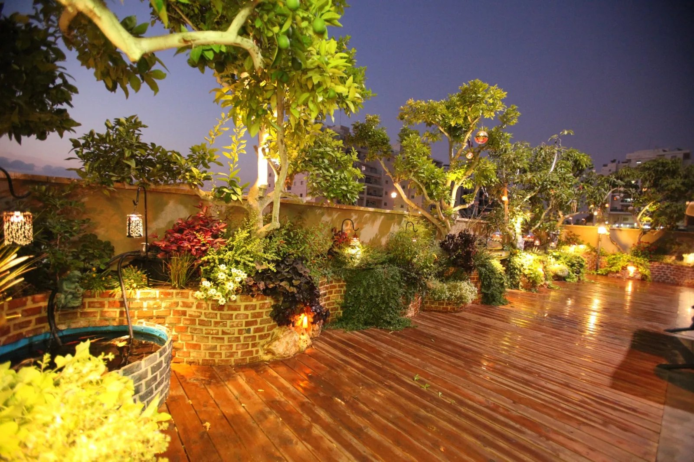
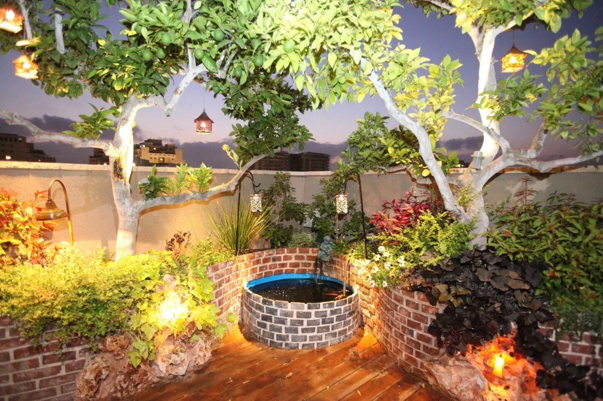
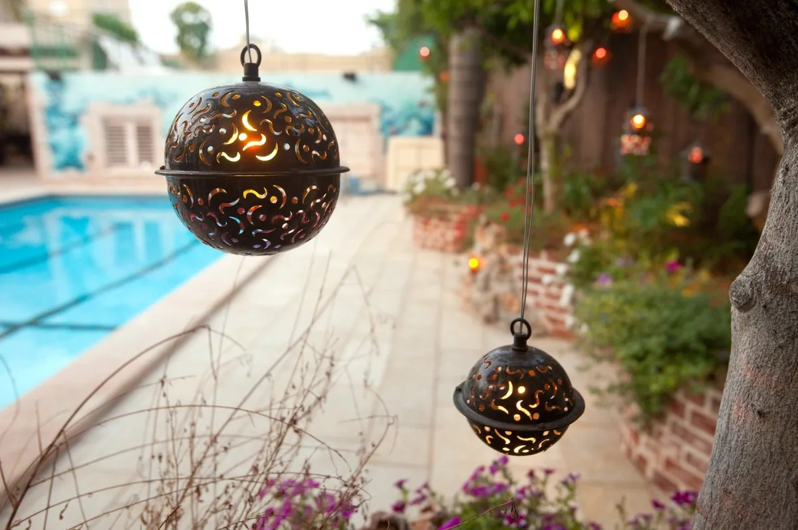
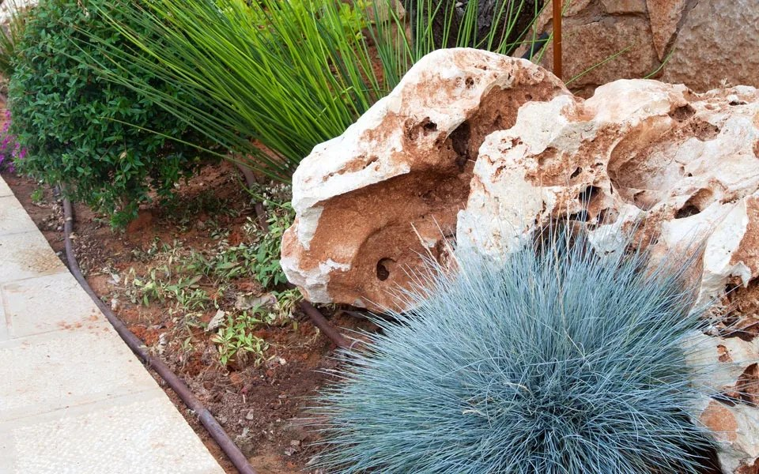
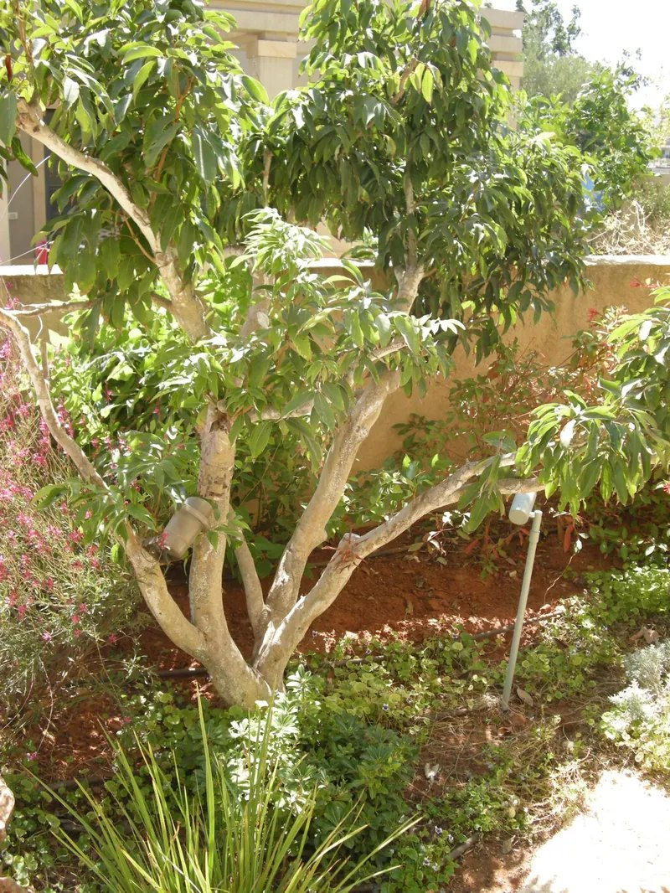
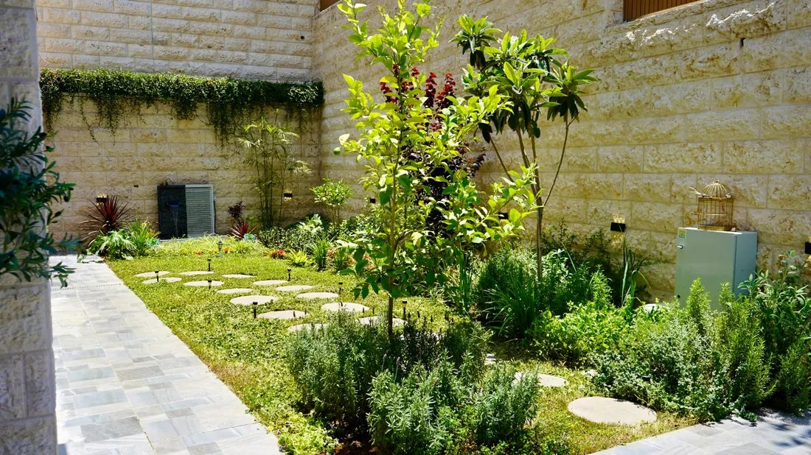

הצעה לעיון · ללא התחייבות לתוצאותהצעת שיווק וצמיחה · לעיון צלחיה · לא נשלחה לגנן

DN-20260916-G01
ישראל דוב אבודארה · אשדוד והסביבה · מסלול נפרד לירושלים
הניצן שבגן
יותר עבודות רווחיות. תקציב ברור ומדיד.
תוכנית מעשית לאשדוד והסביבה, עם מסלול נפרד לפרויקטים באזור ירושלים. להתחיל במסלול הבסיס ל־90 יום, ערוץ ממומן אחד בכל פעם, לתקן את קליטת הפניות ולשמור את האתר הקיים. אין הבטחה למספר לקוחות. המחקר ציבורי; ההשערות יאומתו בחשבונות.
צילום מהאתר הניצן שבגן
01
ממצאי בדיקת האתר
נבדקו דפי בית, אודות, שירותים, גלריה ויצירת קשר. נבדקו HTML ציבורי וה־JavaScript הראשי (~517 ק״ב לא דחוס). לא נשלחה פנייה, לא נמדד Lighthouse, לא נבדק טלפון אמיתי, אבטחה או נגישות. robots.txt ו־sitemap לא היו נגישים מכאן — אין להסיק שאינם קיימים.
נצפה
פעולה מוצעת
P0הטופס שנבדק שומר בדפדפן הגולש ופותח וואטסאפ. הוא אינו מוכיח שההודעה נשלחה.
שמירה מרכזית עם מזהה פנייה; אישור רק אחרי שמירה מוצלחת.
P0לא נמצאו סימוני GA4, Google Ads, GTM או Meta Pixel בקבצים הציבוריים העיקריים. אין בכך הוכחה שאין מדידה חיצונית אחרת.
לבדוק חשבונות והזרקות צד־שלישי; להגדיר מדידה אחת ולבדוק אירועים.
P1המסר הראשון אינו מציין בבירור את אשדוד והסביבה.
להציג אשדוד והסביבה, CTA לוואטסאפ, וגרסת ירושלים לפרויקטים בלבד.
P1כותרות כלליות בגלריה; לא נמצא canonical או JSON-LD בדף שנבדק.
כותרות ותיאורים לכל עמוד, canonical עקבי, נתונים מובנים עובדתיים.
P1לא אותרו ביקורות מאומתות או קישור למדיניות פרטיות בדפים שנבדקו.
להציג ביקורות אמיתיות ומקורן; מידע על איסוף, שמירה ומעקב פרסומי.
P2תג Lovable גלוי; JavaScript ראשי ≈ 517 ק״ב לא דחוס.
להסיר את התג באפשרויות המורשות; לפרופיל לפני אופטימיזציה. לא להחליף מארח מתוך עיקרון.
לשמר: תמונות, היררכיה קריאה, שירותים נפרדים, קישורי קשר, ניווט עברי ופונקציות נגישות שקיימות. נוכחותן אינה הסמכת נגישות מלאה.
02
מביקור לדרישה אמינה
מודעה מדויקת → עמוד מקומי ושירות תואם → טופס קצר או וואטסאפ ישיר → פנייה שנקלטה וסווגה → הצעת מחיר → עבודה חתומה → מרווח. לחיצה בוואטסאפ אינה שיחה שהתקבלה ואינה לקוח.
אירוע
משמעות
click_whatsapp / click_call
לחיצה על הקישור; מדד משני. אין סטטוס «לקוח» בשלב זה.
lead_received
קליטה בשרת של הטופס; איש קשר ייחודי ומקור שמורים.
qualified_lead
אזור שירות, צורך אמיתי, שירות בר־ביצוע, תקציב ולוח זמנים תואמים.
quote_sent / won
הצעה נשלחה ואז התקבלה; הכנסה ועלויות משתנות מיוחסות לפנייה.
GTM + GA4 + Google Ads ופיקסל מטא, בלי כפילות אירועים. המרה ראשית אחת לכל יעד. אם פיקסל ו־CAPI מדווחים אותו אירוע — אותו event_id. לא מעבירים שמות, מספרים או טקסט חופשי לפרמטרי GA4.
03
כיוון לעמוד הבית — לא שינוי שבוצע
אשדוד והסביבה · גגות · מרפסות · אחזקה
גינה מטופחת. שירות אישי. קרוב לבית.
שלחו תמונה בוואטסאפ
טופס משני — אחרי שמירה מרכזית
שםיישובהצורך
האזור גלוי. תמונת תיק אמיתית. וואטסאפ ראשי, טופס משני. האישור מוצג רק אחרי שמירה עם מזהה — לא אחרי לחיצה בלבד.
האתר הקיים כבר מציג את העסק במקצועיות. אין להניח מראש שנדרשת בנייה מחדש. אפשרות ממוקדת: 1,900 ₪ HT לעמוד המרה אחד באתר הקיים, סבב תיקון אחד, בלי מיתוג חדש או מעבר מערכת. עד חמישה עמודים: 3,900 ₪ HT ושני סבבים — לא המלצת הפתיחה. רכיב שכבר כלול בניהול לא יחויב שוב. אין שיפוץ מלא ב־4,900.
04
שוק ותחרות — איפה להיבדל
תיק עבודות מהאתר — גינות, גגות ומרפסות שצולמו בשטח





שני מנועים: אחזקה חוזרת מקומית (מסלולים קצרים, הכנסה צפויה) ופרויקטי הקמה, גגות, מרפסות ותאורה (מחזור גבוה יותר, תיק עבודות קובע). עברית היא הבסיס; מודעה בצרפתית לבדיקה לפי שפה, אזור וצורך — בלי מיקוד דתי או עדתי.
לא מפעילים את כל האזורים יחד. אין דירוג עושר או צפיפות וילות לפי שכונה. האזור הטוב הוא זה שממקסם מרווח אחרי נסיעה ורכישה.
A1
אשדוד — קרוב לבית
אחזקה ושיקום; נקודת פתיחה לצמצום נסיעות. לבדוק שכונות לפי פניות בפועל.
A2
גן יבנה, שתולים, ביצרון, אמונים
השערת מסלול גינות סביב אשדוד. לאמת זמני נסיעה לפני מיקוד.
B
יבנה / גן רווה
הרחבה רק אם אזור A מניב לקוחות רווחיים. אותה הצעה ואותה יצירה להשוואת אזור.
C
ירושלים, מבשרת ציון, בית זית, בית שמש
פרויקטים בעלי ערך או יום מרוכז. לא יציאה זולה בודדת בלי רצפה כלכלית.
05
גוגל, מטא, טיקטוק — תפקיד כל ערוץ
חיפוש בגוגל
לבדוק 90 יום אחרונים; לשמר מה שכבר מביא הצעות מתאימות. מחליטים לפי עלות פנייה מתאימה, סגירות ומרווח — לא לפי קליקים בלבד.
אינסטגרם + פייסבוק
מערך מטא אחד, מודעות לוואטסאפ או לטופס. שני מיקומים אינם שני תקציבים נפרדים. [12]
WhatsApp Business
יעד המרה, בירור צורך ומעקב פניות. לחיצה אינה הוכחה שהתקבלה הודעה. פיקסל אינו קורא שיחות.
טיקטוק
שימוש חוזר אורגני בסרטונים. ממומן רק בהמשך, עם מעטפת נפרדת ומספיק סרטונים. מינימום Ads Manager: >20 USD ליום לקבוצה; >50 USD לקמפיין כשקובעים תקציב ברמה זו. [13] אין טיקטוק מוסתר בסכומי המדיה.
ברירת מחדל: לשמר גוגל בזמן ביקורת 90 יום. אם אחרי תיקון המדידה אין המרות שמישות — פיילוט מטא 30 יום עם 1,000 ₪. ב־1,500 ₪: ערוץ עיקרי אחד, השני בתור. ב־3,000 ₪: גוגל 1,800 / מטא 1,200, ואז לפי מרווח. 900 ₪ ≈ 29.61 ₪ ליום ממוצע (900/30.4). תקציב יומי בגוגל אינו תקרה יומית קשיחה. [11,19]
קמפיינים ובדיקות — בלי לפזר
קבוצה
מילות מפתח / שלילות
אחזקה / בקשה מקומית
גנן באשדוד · אחזקת גינות באשדוד · גנן בגן יבנה
פרויקט / עמוד ייעודי
הקמת גינה · עיצוב גינה במרפסת · הקמת גינה בירושלים
שלילות לבדיקה
דרושים · קורס · לימודים · כלי גינון · עבודה בגינון · עשה זאת בעצמך
מבנה גוגל: קמפיין מקומי אחד; שני קבוצות רק אם יש נפח — אחזקה ושיקום. Exact/Phrase, בלי Display או Performance Max במעטפת הזו. בדיקה 1: אותו אזור והצעה, שתי יצירות. בדיקה 2: יצירה מנצחת, אזור A מול B. בדיקה 3: וואטסאפ מול טופס. בדיקה 4: עברית מול צרפתית. גורם אחד בכל פעם. ב־1,000 ₪ שתי גרסאות מקבלות 500 ₪; בעלות היפותטית 100 ₪ לפנייה מתאימה — כחמש פניות לגרסה. אין הכרזה על מנצח אחרי שני קליקים.
יצירות מוכנות לבדיקה
יצירה א — שיקום מקומי
הגינה צריכה רענון? הניצן שבגן מציע טיפול מסודר בגינה באשדוד והסביבה. שלחו תמונה וציינו את היישוב, ונבדוק יחד מה מתאים לגינה שלכם.
יצירה ב — גינת גג / מרפסת
המרפסת יכולה להפוך לפינה ירוקה. תכנון והקמת גינות גג ומרפסת, עם התאמה לשטח ולשימוש שלכם. שלחו תמונה לקבלת כיוון ראשוני.
גרסה צרפתית
Votre jardin mérite un entretien suivi. À Ashdod et dans les environs, échangez en français avec votre jardinier. Envoyez une photo et votre ville sur WhatsApp. Devis après évaluation du besoin.
סרטון 15 שנ׳: 0–3 בעיה; 3–9 עבודה אמיתית; 9–12 תוצאה; 12–15 יישוב + הזמנה לשלוח תמונה. הבטחה אחת, כתוביות עברית, בלי הנחה לא מאושרת. ויזואל: לפני/אחרי אמיתי, 4:5 ו־9:16. אין גינה שנוצרה בבינה כאילו היא עבודה שבוצעה.
06
שלושה מסלולי ניהול
בסיס
ערוץ אחד · 90 יום
מומלץ לפתיחה
2,000₪
לחודש · דמי ניהול
מדיה בכרטיס הלקוח · 1,000 ₪
סה״כ לפני מסים: 3,000 ₪
אבחון, מדידה בסיסית לפי הערוץ, טופס מרכזי והתראה
ערוץ ממומן פעיל אחד בכל פעם
2 סטטיות + סרטון קצר אחד · 4:5 ו־9:16 · סבב תיקון אחד
שיפור אתר עד שעה בחודש
טיפול בסיסי בפרופיל גוגל, בקרה שבועית, דוח חודשי
הקמה כלולה עד 5 שעות בחודש הראשון
צמיחה
שני ערוצים מנוהלים · בדיקות מדורגות
2,800₪
לחודש · דמי ניהול
מדיה בכרטיס הלקוח · 1,500 ₪
סה״כ לפני מסים: 4,300 ₪
הכול מבסיס, כולל השוואת אזורים והצעות
שני ערוצים מנוהלים; בדיקות מדורגות בתקציב קטן
3 סטטיות + 2 סרטונים קצרים · סבב תיקון אחד
שיפור אתר עד שעתיים בחודש
האצה
שני ערוצים פעילים · לא פתיחה מומלצת
3,500₪
לחודש · דמי ניהול
מדיה בכרטיס הלקוח · 3,000 ₪
סה״כ לפני מסים: 6,500 ₪
הכול מצמיחה + מעקב מכירות ושיחה פעמיים בחודש
שני ערוצים פעילים; טיקטוק ממומן רק בתקציב נפרד
4 סטטיות + 4 סרטונים · שני סבבי תיקון
שיפור אתר עד 3 שעות בחודש
המחירים לפני מע״מ 18% אם חל. המדיה משולמת ישירות לפלטפורמות בכרטיס הלקוח. אין הבטחת פניות, מכירות או דירוג.
AK Digital: מטא 1,200–2,500, חיפוש 1,800–2,500 — לכן 2,000 נמצא בשוק, לא אוטומטית 20–30% זול יותר. TZD: ערוץ אחד 2,000; שניים 3,500; הכל 4,500 — 2,800 מול 3,500 = -20% אבל היקפים שונים. Mental: דף נחיתה 2,500–4,500. עמדת מכירה כנה: «מ־2,000 ₪ לחודש יש ניהול, יצירות ומעקב עד להצעת מחיר. החשבונות שלכם, המדיה בכרטיס שלכם.» בלי סלוגן «הכי זול».
07
טווחי בדיקה לגנן — לא מחירון מפורסם
שירות
ייחוס ציבורי
טווח בדיקה פנימי
אחזקה
המקצוענים: 250–350 ₪/שעה כולל מע״מ [5]
650–900 ₪/חודש כולל מע״מ: שני ביקורים מקומיים 45–60 דק׳, גינה פשוטה; חומרים כבדים בנפרד
ניקוי ≤ 100 מ״ר
550–850 ₪ כולל מע״מ, ניקוי בסיסי [5]
650–850 ₪ כולל מע״מ אם מורכבות ופינוי מתאימים. בלי מחיר קבוע בלי תמונות.
ייעוץ / תכנון ראשוני
350–500 ₪ כולל מע״מ, ביקור וסקיצה [5]
350–450 ₪ כולל מע״מ מקומי; ניתן לזכות מפרויקט אם מתקבל.
הקמה / מרפסת
חומרים ואתר משתנים מאוד
הצעה מפורטת: צמחים, השקיה, מיכלים, ניקוז, עבודה. אין פורס מלאכותי למ״ר.
סימולציה, לא מדידת מסלול: 160 ק״מ הלוך־חזור × 1.40 = 224 ₪; 3 שעות נסיעה × 150 = 450 ₪. עלות כלכלית לפני העבודה: 674 ₪. אם נשאר 50% לפני נסיעה ורוצים 250 אחרי: (674+250)/0.50 = 1,848 ₪. סף פנימי מוצע: כ־2,000 ₪ HT ליציאה בודדת, או שלוש עבודות מרוכזות של 750 ₪ HT. אלה ספים פנימיים, לא מחירי שוק בירושלים. אין כתובת עסק פיקטיבית בירושלים.
08
כמה לקוחות צריך — המחשה, לא תחזית
עלות רכישה מלאה כוללת ניהול ומדיה. הנחות לתוכנית בסיס: 1,000 מדיה + 2,000 ניהול. *תוחלת חשבונאית, לא מספר אנשים שנצפה: 0.5 ≈ לקוח כל חודשיים.
תרחיש להמחשה בלבד — לא תחזית ולא התחייבות
תרחיש
מיטיב
מרכזי
מחמיר
עלות / פנייה מתאימה (מדיה)
50 ₪
100 ₪
200 ₪
פניות מתאימות
20
10
5
שיעור סגירה בהנחה
30%
20%
10%
לקוחות ממוצעים*
6
2
0.5
רכישה מלאה / לקוח
500 ₪
1,500 ₪
6,000 ₪
אם חוזה אחזקה משאיר 350 ₪ לחודש אחרי חומרים, רכב, קבלני משנה ושווי זמן — צריך תשעה חוזים פעילים נוספים כדי לכסות 3,000 ₪ שיווק בחודש אחד. שלושה חוזים שנשמרים שלושה חודשים מכסים חודש רכישה אחד, לא שלושה חודשי שיווק. לצמיחה 4,300 דרושים כ־13 חוזים שקולים; להאצה 6,500 כ־19. פרויקט שמשאיר 1,500 משנה את המשוואה — אם המרווח נמדד.
01
חודשים 1–3 · הוכחה
2,000 + 1,000 ₪. קליטה אמינה, ערוץ אחד, אזור עיקרי, השוואת יצירות וסגירות ראשונות.
02
חודשים 4–6 · צפיפות
2,000 + 1,500 ₪. אותו בסיס; מסלול מקומי צפוף יותר. ערוץ אחד פעיל, השני נבדק בתור. עלייה רק אחרי תרומה.
03
חודשים 7–12 · הרחבה
2,000 + 2,000 ₪. חיזוק הערוץ הרווחי; אזורים נוספים אחד־אחד. מעבר ל־2,800/3,500 רק אם היקף העבודה גדל.
אם כל השלבים מאושרים: 24,000 ניהול + 19,500 מדיה = 43,500 ₪ לפני מסים. זה אינו התחייבות שנתית. אם הבדיקה נכשלת — אין העלאה אוטומטית.
09
תשלום בפועל ומע״מ
מסלול
ניהול HT
עם מע״מ 18%
מדיה
מזומן מינימלי
בסיס / Essentiel
2,000
2,360
1,000
3,360
צמיחה / Croissance
2,800
3,304
1,500
4,804
האצה / Accélération
3,500
4,130
3,000
7,130
אם התקרה היא 3,000 ₪ TTC הכול: אחרי 2,360 ניהול עם מע״מ נשארים 640 למדיה. אין לקרוא לבסיס «3,000 הכול כלול». מעמד המס של הסוכנות טרם נמסר. [18]
10
תגיות מוצעות לאתר הקיים
נוסחים להכנה, לא שינויים שבוצעו. בתוך שעות האתר המוגדרות, בעדיפות בית והעמודים המקודמים. meta-keywords אינו כלי קידום בגוגל; תיאור מטא אינו מבטיח דירוג.
עמוד
כותרת מוצעת
/
גנן באשדוד והסביבה | הניצן שבגן
/services
הקמה ואחזקת גינות באשדוד והסביבה | הניצן שבגן
/gallery
עבודות גינון, גינות גג ומרפסות | הניצן שבגן
/about
ישראל דב והניצן שבגן | תכנון, הקמה ואחזקת גינות
/contact
הצעת מחיר לגינה באשדוד והסביבה | הניצן שבגן
הניצן שבגן: תכנון, הקמה ואחזקה של גינות באשדוד והסביבה, גינות גג ומרפסת ותאורת גן. שלחו תמונה בוואטסאפ לבדיקת הצורך ולהצעת מחיר מותאמת.
11
תנאים
פיילוט מומלץ 90 יום, חיוב חודשי, בלי נעילה שנתית. סיום בסוף חודש ששולם בהודעה של שבעה ימים. אין הבטחת פניות, מכירות או דירוג. חשבונות, דומיין, נתונים ויצירות ששולמו נשארים אצל הלקוח. מדיה בתקרה מאושרת ובכרטיס הלקוח. הקמה אינה מכסה מיגרציה מורכבת. בתוקף עד 30.09.2026. הוכן לעיון צלחיה; לא נשלח לגנן. לא הותקן פיקסל ולא הוצאה מדיה במחקר זה.
DreamNova.studio · David Amor, Senior Project Manager · 0584921492. הצעה לעיון, לא חוזה חתום.